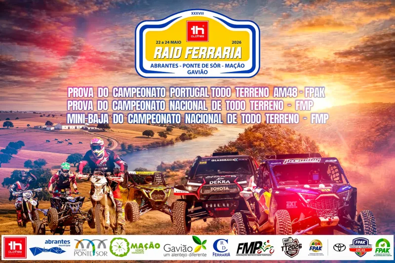
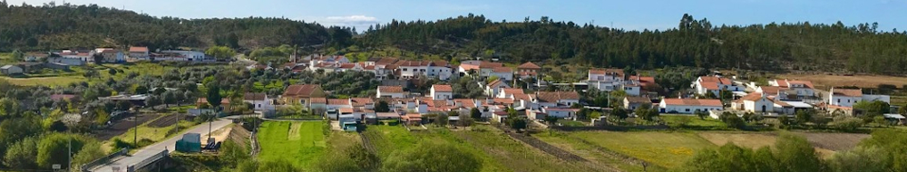
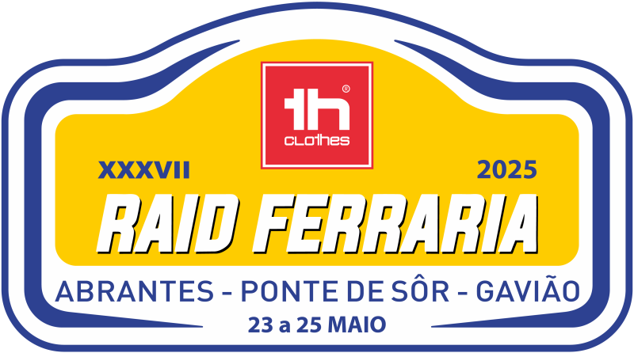
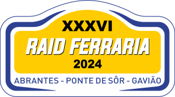
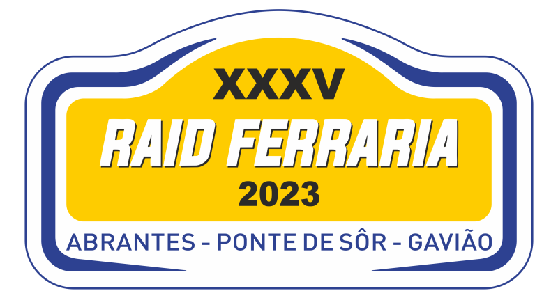

AUTO
Pontuável para o Campeonato Portugal de Todo-o-Terreno da FPAK.
22 a 24 maio 2026
Centro nevrálgico em Ponte de Sor, com percurso pelos concelhos de Abrantes, Ponte de Sor, Mação e Gavião.

Pontuável para o Campeonato Portugal de Todo-o-Terreno da FPAK.
Pontuável para o Campeonato Nacional de Todo-o-Terreno da FMP.
Prova para jovens pilotos dos 8 aos 16 anos.
Programa
A prova é composta por um Prólogo e duas Etapas. A Mini-Baja inclui Prólogo na sexta-feira e setor seletivo no sábado, terminando com entrega de prémios.
Sportity
O quadro oficial da prova é disponibilizado através da aplicação Sportity em dispositivos móveis, tablet e website.
Canal Sportity FERRARIA26CNTT
Abrir canalCanal Sportity FERRARIA26AUTOS
Abrir canalRally / Raid
Galeria anual com cartazes, fotografias históricas, logótipos por edição e ligação direta aos dossiers oficiais com classificações, listas, regulamentos, mapas e informação de prova.

Foram substituídos os blocos provisórios por imagens reais do Raid Ferraria, incluindo o cartaz de 2010 e o símbolo atual “Raid Ferraria — Desde 1991”.
Vídeo público incorporado diretamente na página do Rally/Raid.

Imagem atual da edição de 22 a 24 de maio.

Cartaz oficial de 23 a 25 de maio.

Cartaz oficial da edição de 26, 27 e 28 de abril.

Programa e imagem da edição de 21 a 23 de abril.

Cartaz histórico da edição Abrantes · Ponte de Sor · Gavião.

Peça de comunicação visual da memória do Raid.

Fotografia panorâmica do parque fechado em Abrantes-Gavião.

Cartaz oficial da edição de 28 e 29 de abril.

Cartaz oficial com Abrantes-Gavião.

Cartaz da edição Vinho Fonte dos Garfos.

Cartaz da edição Vinhos Pausa · Município de Gavião.

Cartaz oficial da edição de 29 e 30 de março.

Cartaz da edição Vinhos Pausa.

Cartaz da edição Vinho da Margalha.

O cartaz antigo que enviaste, integrado no arquivo visual.
Logótipos
O ícone provisório foi retirado e substituído pelo símbolo atual. Abaixo ficam os logótipos/cartazes já existentes e a cronologia ligada ao arquivo oficial.
 Desde 1991símbolo atual
Desde 1991símbolo atual
2025XXXVII edição
2024XXXVI edição
2023XXXV ediçãoArquivo oficial
Ligação direta às páginas antigas/atuais do Clube Ferraria para consultar classificações, regulamentos, listas de inscritos, mapas, horários, Sportity e documentos por ano.
Programa, Sportity e informação da edição atual
Regulamento, inscrições, Sportity e informação oficial
Inscrições, programa e canais Sportity
Sportity, inscrições e informação oficial
Cartaz, documentação e resultados oficiais
Cartaz, documentação e classificações
Cartaz e memória da edição
Cartaz, documentação, classificações e registos
Cartaz, regulamento, listas, tempos e classificações
Cartaz, mapas, horários, listas e classificações
Cartaz, inscrições, horários, classificações e registos
Cartaz, regulamentos, inscritos e classificações
Cartaz, documentação, tempos e classificações
Cartaz, documentos e classificações
Cartaz, documentos e classificações
Documentação e classificações
Cartaz, lista de inscritos, classificações e volta a volta
Documentos e classificações
Documentos e classificações
Documentos e classificações
Documentos e classificações
Documentos e classificações
Documentos e classificações